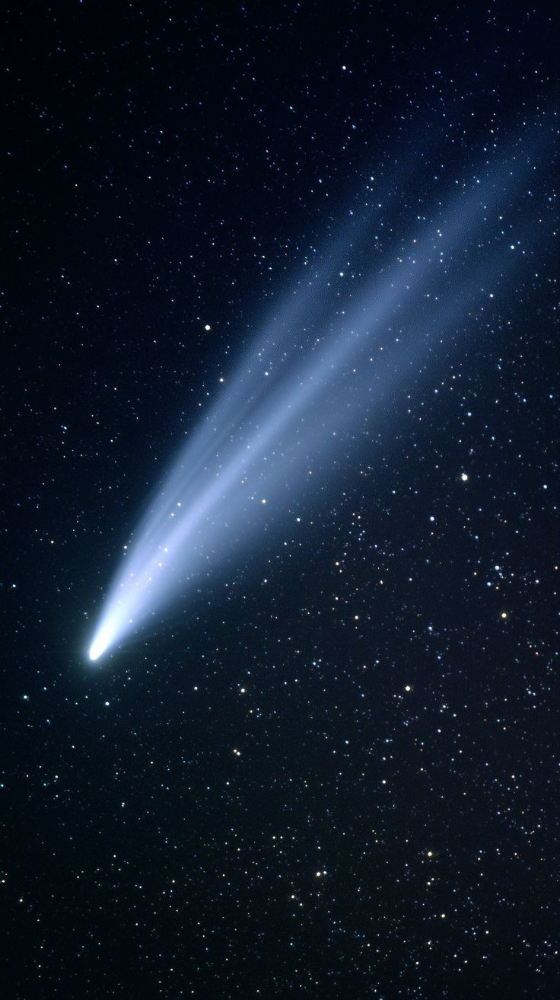

Four fields we keep returning to
Each program exists to extend one particular sense, how far we can see, how long we can listen, how gently we can land, and how long a person can stay well out there.
Long-Gaze Imaging
Ultra-stable mirror arrays designed to hold a single point in the sky steady for days at a time, resolving light that left its source before human beings existed.
- Cryogenic mirror stabilization
- Adaptive vibration dampening
- Multi-week single-target exposures
Deep Listening Systems
Radio arrays tuned to filter Earth's own electromagnetic noise, built for missions like Vesper that are, quite literally, trying to hear the beginning of everything.
- Quiet-orbit signal filtering
- Distributed array synchronization
- Low-frequency cosmic background capture
Gentle Landing Systems
Propulsion and guidance systems designed around one principle: arrive softly enough that whatever you're studying is still intact when you get there.
- Terrain-adaptive throttle control
- Low-disturbance touchdown legs
- Autonomous hazard mapping
Long-Duration Habitats
Life support and habitat design research focused as much on psychological wellbeing as on oxygen and temperature — built for missions like Aphelion.
- Closed-loop life support
- Circadian lighting design
- Isolation & wellbeing research

Slow science, built to last.
Nektara instruments are built for decade-long service, not headline launches. We would rather send one array that listens faithfully for twenty years than ten that generate a week of attention.
Every research program passes through open review with independent scientists before it ever reaches a launch pad — because the questions matter more than the credit.
"The best instrument is the one that disappears — leaving only what it found, and the quiet it found it in."— Nektara Research Division